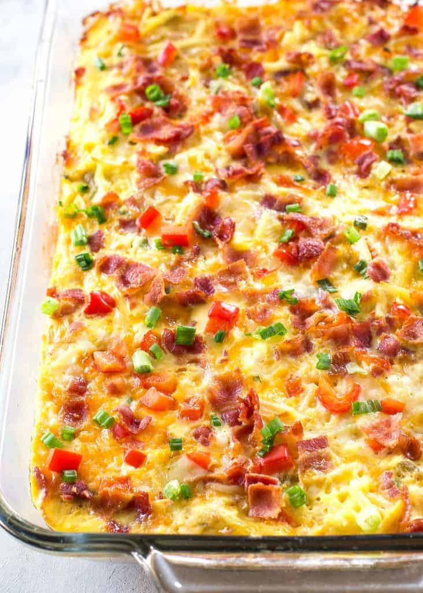

Hash Brown Casserole

On a cold night in, this hits the spot
Did you just move out and want to impress your parents? This will do just that.
Ingredients
6 large eggs, well beaten
1 can (12 fluid ounces) NESTLÉ CARNATION Evaporated Milk
1 tsp salt
½ tsp ground black pepper
1 package (30 ounces) frozen shredded hash brown potatoes
2 cups (8 ounces) shredded cheddar cheese
1 medium onion, chopped
1 small green bell pepper, chopped
1 cup diced ham (optional)
How to make it
- Preheat oven to 350 degrees F. Grease 13X9-inch backing dish
- Combine eggs, evaporated milk, salt and pepper in a large bowl.
- Add potatoes, cheese, onion, bel pepper, and ham into same bowl; mix well. Pour mixture into baking dish.
- Bake for 60 to 65 minutes or until set
Return to Recipes